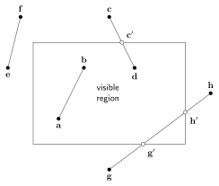
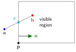
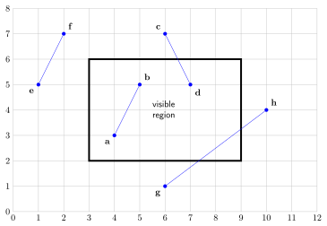
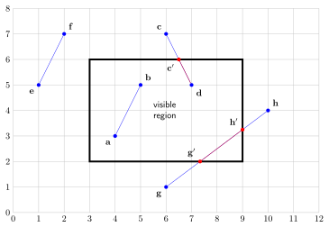

Line clipping
Contents
Line clipping#
Since the objects that form our virtual environment are constructed using polygons which are formed using lines, the problem of clipping the screen space can be reduced to the clipping of individual lines. Consider the diagram in Fig. 73 which shows the different line clipping scenarios we need to consider.
{kind=link}

Fig. 73 Various line clipping scenarios.#
Visual inspection of Fig. 73 shows we need to do the following
\(\mathbf{a} \to \mathbf{b}\): both endpoints are inside of the visible region so we can draw the line \(\mathbf{a} \to \mathbf{b}\);
\(\mathbf{c} \to \mathbf{d}\): the endpoint \(\mathbf{c}\) is outside and \(\mathbf{d}\) is inside of the visible region so we clip \(\mathbf{c}\) to the top edge at \(\mathbf{c}'\) and draw the line \(\mathbf{c}' \to \mathbf{d}\);
\(\mathbf{e} \to \mathbf{f}\): both endpoints are outside of the visible region and the line \(\mathbf{e} \to \mathbf{f}\) does not enter the visible region and is ignored;
\(\mathbf{g} \to \mathbf{h}\): both endpoints are outside of the visible region and the line \(\mathbf{g} \to \mathbf{h}\) does enter the visible region so we clip endpoint \(\mathbf{g}\) to the bottom edge at \(\mathbf{g}'\) and also clip endpoint \(\mathbf{h}\) to the right edge at \(\mathbf{h}'\) and draw the line \(\mathbf{g}' \to \mathbf{h}'\).
The Cyrus-Beck algorithm#
The Cyrus-Beck algorithm [Cyrus and Beck, 1978] is an algorithm for clipping a single line to a single edge. Consider the diagram in Fig. 74 which shows the line joining two points \(\mathbf{a} \to \mathbf{b}\) that passes through the plane defined by the normal vector \(\mathbf{n}\) and point \(\mathbf{p}\).
{kind=link}

Fig. 74 The line joining points \(\mathbf{a} \to \mathbf{b}\) is clipped to the left edge at point \(\mathbf{c}\).#
Clipping of the line joining points \(\mathbf{a}\) and \(\mathbf{b}\) to the plane requires the calculation of the point where the line intersects with the plane. To calculate the intersection point \(\mathbf{c}\) we use the vector formula for calculating the shortest distance between a point and a plane, equation (18)
The vector equation of the line \(\mathbf{a} \to \mathbf{b}\) is
and substituting into equation (30)
The intersection point \(\mathbf{c}\) is where the distance to the plane is zero so setting \(d=0\) and rearranging to make \(t\) the subject gives
This expression for \(t\) can be substituted into equation (31) to give \(\mathbf{c}\).
On visual inspection it is easy for us to see that in Fig. 74 point \(\mathbf{a}\) is outside of the visible region and needs to be clipped to the left edge at \(\mathbf{c}\) and the line \(\mathbf{a}\) to \(\mathbf{c}\) is replaced by \(\mathbf{c}\) to \(\mathbf{b}\). To get a computer to do this we can use the distance between the endpoints and the edges of the visible region. If the normal vectors of the edges of the visible region are pointing into the interior, then any point where the distance to the edge calculated using equation (18) is negative is outside and needs to be clipped. So before calculating \(t\) we calculate the distances of \(\mathbf{a}\) and \(\mathbf{b}\) to the edge
There are four possible situations to consider
If \(d(\mathbf{a}) < 0\) and \(d(\mathbf{b}) > 0\) then \(\mathbf{a}\) is outside and \(\mathbf{b}\) is inside and we clip \(\mathbf{a}\) to \(\mathbf{c}\);
Else if \(d(\mathbf{a}) > 0\) and \(d(\mathbf{b}) < 0\) then \(\mathbf{a}\) is inside and \(\mathbf{b}\) is outside and we clip \(\mathbf{b}\) to \(\mathbf{c}\);
Else if \(d(\mathbf{a}) > 0\) and \(d(\mathbf{b}) > 0\) then both \(\mathbf{a} \to \mathbf{b}\) are inside so we don’t need to clip the line joining \(\mathbf{a} \to \mathbf{b}\);
Else if \(d(\mathbf{a}) < 0\) and \(d(\mathbf{b}) < 0\) then both \(\mathbf{a} \to \mathbf{b}\) are outside so we ignore the line joining \(\mathbf{a} \to \mathbf{b}\).
Since we have calculated \(d(\mathbf{a})\) and \(d(\mathbf{b})\) to determine whether clipping is required, it makes sense to use these values to calculate \(t\). Rearranging equation (32) gives
Algorithm 1 (Cyrus-Beck algorithm)
Inputs An edge of the visible region defined by its inwardly pointing normal vector \(\mathbf{n}\) and a point on the edge \(\mathbf{p}\) and a line with endpoint \(\mathbf{a} \to \mathbf{b}\).
Outputs Two endpoints of a line \(\mathbf{a} \to \mathbf{b}\).
\(d(\mathbf{a}) \gets (\mathbf{a} - \mathbf{p}) \cdot \mathbf{n}\) and \(d(\mathbf{b}) \gets (\mathbf{b} - \mathbf{p}) \cdot \mathbf{n}\)
\(t \gets \dfrac{d(\mathbf{a})}{d(\mathbf{a}) - d(\mathbf{b})}\)
If \(d(\mathbf{a}) < 0\) and \(d(\mathbf{b}) > 0\)
\(\mathbf{a} \gets \mathbf{a} + t (\mathbf{b} - \mathbf{a})\)
Else if \(d(\mathbf{a}) > 0\) and \(d(\mathbf{b}) < 0\)
\(\mathbf{b} \gets \mathbf{a} + t (\mathbf{b} - \mathbf{a})\)
Else if \(d(\mathbf{a}) < 0\) and \(d(\mathbf{b}) < 0\)
\(\mathbf{b} \gets \mathbf{a}\) (creates a line of zero length)
Return \(\mathbf{a}\) and \(\mathbf{b}\)
Example 33
Use the Cyrus-Beck algorithm to clip the lines \(\mathbf{a} \to \mathbf{b}\), \(\mathbf{c} \to \mathbf{d}\), \(\mathbf{e} \to \mathbf{f}\) and \(\mathbf{g} \to \mathbf{h}\) in the diagram below.

Solution
The normal vectors for the four edges are:
Line \(\mathbf{a} \to \mathbf{b}\): considering each edge in turn
bottom: \(d(\mathbf{a}) = 1 > 0\) and \(d(\mathbf{b}) = 3 > 0\) so do not clip \(\mathbf{a} \to \mathbf{b}\)
right: \(d(\mathbf{a}) = 5 > 0\) and \(d(\mathbf{d}) = 4 > 0\) so do not clip \(\mathbf{a} \to \mathbf{b}\)
top: \(d(\mathbf{a}) = 3 > 0\) and \(d(\mathbf{d}) = 1 > 0\) so do not clip \(\mathbf{a} \to \mathbf{b}\)
left: \(d(\mathbf{a}) = 1 > 0\) and \(d(\mathbf{d}) = 2 > 0\) so do not clip \(\mathbf{a} \to \mathbf{b}\)
Line \(\mathbf{c} \to \mathbf{d}\):
bottom: \(d(\mathbf{c}) = 5 > 0\) and \(d(\mathbf{d}) = 3 > 0\) so do not clip \(\mathbf{c} \to \mathbf{d}\)
right: \(d(\mathbf{c}) = 3 > 0\) and \(d(\mathbf{d}) = 2 > 0\) so do not clip \(\mathbf{c} \to \mathbf{d}\)
top: \(d(\mathbf{c}) = -1 < 0\) and \(d(\mathbf{d}) = 1 > 0\) so clip \(\mathbf{c}\) to the top edge
left: \(d(\mathbf{c}') = 7/2 > 0\) and \(d(\mathbf{d}) > 4\) so do not clip \(\mathbf{c}' \to \mathbf{d}\)
Line \(\mathbf{e} \to \mathbf{f}\):
bottom: \(d(\mathbf{e}) = 3 > 0\) and \(d(\mathbf{f}) = 5 > 0\) so do not clip \(\mathbf{e} \to \mathbf{f}\)
right: \(d(\mathbf{e}) = 7 > 0\) and \(d(\mathbf{f}) = 6 > 0\) so do not clip \(\mathbf{e} \to \mathbf{f}\)
top: \(d(\mathbf{e}) = 1 > 0\) and \(d(\mathbf{f}) = -1 < 0\) so clip \(\mathbf{f}\) to the top edge
left: \(d(\mathbf{e}) = -1 < 0\) and \(d(\mathbf{f}') = -1/2 < 0\) so do not draw line \(\mathbf{e} \to \mathbf{f}'\).
Line \(\mathbf{g} \to \mathbf{h}\):
bottom: \(d(\mathbf{g}) = -1 < 0\) and \(d(\mathbf{h}) = 2 > 0\) so clip \(\mathbf{g}\) to bottom edge
left: \(d(\mathbf{g}') = 5/3 > 0\) and \(d(\mathbf{h}) = -1 < 0\) so clip \(\mathbf{h}\) to left edge
top: \(d(\mathbf{g}') = 4 > 0\) and \(d(\mathbf{h}') = 11/4 > 0\) so do not clip \(\mathbf{g}' \to \mathbf{h}'\)
left: \(d(\mathbf{g}') = 13/3 > 0\) and \(d(\mathbf{h}') = 6 > 0\) so do not clip \(\mathbf{g}' \to \mathbf{h}'\)
